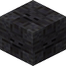

錾制凋零黑石
Chiseled Withered Blackstone
英文名: Chiseled Withered Blackstone命名空间 ID:
eternalnether:chiseled_withered_blackstone类型: 方块所属模组: Eternal Nether资料检索: 🔎 在 MC百科 搜索「錾制凋零黑石」合成获得 (2)
有序合成Eternal Nether
原始 JSON
{
"type": "minecraft:crafting_shaped",
"category": "building",
"key": {
"#": {
"item": "eternalnether:withered_blackstone_slab"
}
},
"pattern": [
"#",
"#"
],
"result": {
"count": 1,
"id": "eternalnether:chiseled_withered_blackstone"
}
}原始 JSON
{
"type": "minecraft:stonecutting",
"ingredient": {
"item": "eternalnether:withered_blackstone_slab"
},
"result": {
"count": 1,
"id": "eternalnether:chiseled_withered_blackstone"
}
}